vignette("DESeq2")
vignette("rnaseqGene")RNA seq practice
Preface
This is an attempt to replicate this paper Baoyu Wu et al. Discov Oncol 2023, which uses RNA seq data from this paper Jared M. Andrews et al. Discov Sci 2021
Disclaimer 1: There seems to be discrepancy in count data btw 2 papers, personally I trust the 2nd paper as it is published in a more reliable journal and my generated normalized count matrix was close to the 2nd one.
Disclaimer 2: I am by no means an expert in bioinformatic. This is my attempt to perform differential expression analysis & gene set enrichment analysis in R and also use the DEG data in other tools to identify potential targets for B cell malignancies. Any feedback is highly welcome!!!!!
Disclaimer 3: The sample size is low, and B cells sources are different, i.e. CLL from blood, DLBCL/FL from lymph nodes, healthy from tonsils; therefore, the results here might not be conclusive, these are mainly for my practice.
Differential Expression Analysis (DESeq2)
I follow the guide of:
Sound out to Michael Love, who also taught a great course series on HarvardX.
Import tx files (SALMON)
Tx files available on GSE145842.
library(tidyverse)
files <- list.files(
pattern = "\\quant.sf.txt$",
full.names = TRUE
)
files <- file.path(files)
sample_names <- str_extract(files, "(?<=_).+(?=_)")
names(files) <- sample_names
all(file.exists(files)) # confirm all 29 files present[1] TRUEGet txdb annotation using AnnotationHub or gtf file.
library(AnnotationHub)
ah <- AnnotationHub()
ah_gencode <- subset(ah, species == "Homo sapiens" & dataprovider == "GENCODE")
query(ah_gencode, "v31") AnnotationHub with 6 records
# snapshotDate(): 2024-04-30
# $dataprovider: GENCODE
# $species: Homo sapiens
# $rdataclass: list, TxDb, GRanges
# additional mcols(): taxonomyid, genome, description,
# coordinate_1_based, maintainer, rdatadateadded, preparerclass, tags,
# rdatapath, sourceurl, sourcetype
# retrieve records with, e.g., 'object[["AH75182"]]'
title
AH75182 | TxDb for Gencode v31 on hg19 coordinates
AH75183 | Annotated genes for Gencode v31 on hg19 coordinates
AH75184 | GenomicState for Gencode v31 on hg19 coordinates
AH75185 | TxDb for Gencode v31 on hg38 coordinates
AH75186 | Annotated genes for Gencode v31 on hg38 coordinates
AH75187 | GenomicState for Gencode v31 on hg38 coordinates txdb <- ah[["AH75182"]]gtf files downloaded from https://www.gencodegenes.org/human/release_31lift37.html
library(GenomicFeatures)
gtf <- file.path(list.files(pattern = "\\.gtf$", full.names = TRUE))
txdb <- makeTxDbFromGFF(gtf)Make tx2gene annotation.
k <- keys(txdb, keytype = "TXNAME")
tx2gene <- select(txdb, k, "GENEID", "TXNAME")Finally import tx files.
library(tximport)
txi <- tximport(files, type = "salmon", tx2gene = tx2gene)Take a look.
CLL140 CLL144 CLL158 CLL347B CLL412B DL3A193
ENSG00000000003.14_2 10.228 12.284 7.299 1.002 3.804 94.284
ENSG00000000005.6_3 0.000 0.000 0.000 0.000 0.000 213.000
ENSG00000000419.12_4 847.000 321.001 680.000 41.000 74.000 1179.001
ENSG00000000457.14_4 1246.993 759.371 1280.734 145.119 182.107 2687.444
ENSG00000000460.17_6 486.889 375.767 794.429 68.144 95.149 1592.203
ENSG00000000938.13_4 8208.000 10302.000 283.001 1339.000 1311.000 251.001
DL135 DL166 DL191 DL237 DL252 DL273
ENSG00000000003.14_2 30.618 144.757 42.889 43.288 17.867 21.558
ENSG00000000005.6_3 0.000 0.000 7.000 0.000 0.000 1.000
ENSG00000000419.12_4 673.000 1143.001 1055.000 200.000 1253.999 701.001
ENSG00000000457.14_4 1002.838 1064.924 1015.605 537.884 1407.681 852.266
ENSG00000000460.17_6 747.740 747.719 877.428 238.616 1462.141 1038.525
ENSG00000000938.13_4 385.000 224.000 328.000 467.999 455.000 896.001
DL551 FL3A145 FL120 FL153 FL174 FL202
ENSG00000000003.14_2 122.721 73.529 9.005 6.569 12.544 15.120
ENSG00000000005.6_3 0.000 0.000 1.000 0.000 1.000 0.000
ENSG00000000419.12_4 668.000 709.000 856.000 603.000 790.000 207.000
ENSG00000000457.14_4 1503.469 1344.420 1000.883 1135.286 1576.142 434.979
ENSG00000000460.17_6 2320.097 1132.109 533.303 598.552 778.474 344.021
ENSG00000000938.13_4 637.001 377.000 695.999 537.000 4268.000 57.001
FL238 FL255 FL301 FL303 FL313 TS060911A
ENSG00000000003.14_2 22.676 46.231 6.561 17.247 17.787 28.006
ENSG00000000005.6_3 0.000 0.000 0.000 0.000 0.000 0.000
ENSG00000000419.12_4 541.000 313.000 785.001 1128.001 542.001 689.000
ENSG00000000457.14_4 1030.092 932.464 925.733 1086.917 975.881 788.686
ENSG00000000460.17_6 740.570 504.868 511.113 737.985 430.929 981.885
ENSG00000000938.13_4 98.999 953.000 886.000 34.000 448.000 372.000
TS072111A TS072611B TS081111A TS121511A TS121511B
ENSG00000000003.14_2 22.000 39.174 27.726 101.004 26.000
ENSG00000000005.6_3 0.000 0.000 1.000 0.000 0.000
ENSG00000000419.12_4 800.000 967.999 263.000 679.000 698.000
ENSG00000000457.14_4 655.402 817.537 444.521 770.136 712.036
ENSG00000000460.17_6 1083.970 1330.909 500.022 1011.853 939.470
ENSG00000000938.13_4 388.000 781.000 206.000 90.999 563.000I can save for convenience.
write_rds(txi, "txi.rds")
# txi <- read_rds("txi.rds") # laterCreate DESeq Dataset
Make sample information table first (based on disease status).
sample_info <- data.frame(factor(str_extract(colnames(txi$counts), "CLL|DL|FL|TS")))
rownames(sample_info) <- colnames(txi$counts)
colnames(sample_info) <- "status"
knitr::kable(sample_info)| status | |
|---|---|
| CLL140 | CLL |
| CLL144 | CLL |
| CLL158 | CLL |
| CLL347B | CLL |
| CLL412B | CLL |
| DL3A193 | DL |
| DL135 | DL |
| DL166 | DL |
| DL191 | DL |
| DL237 | DL |
| DL252 | DL |
| DL273 | DL |
| DL551 | DL |
| FL3A145 | FL |
| FL120 | FL |
| FL153 | FL |
| FL174 | FL |
| FL202 | FL |
| FL238 | FL |
| FL255 | FL |
| FL301 | FL |
| FL303 | FL |
| FL313 | FL |
| TS060911A | TS |
| TS072111A | TS |
| TS072611B | TS |
| TS081111A | TS |
| TS121511A | TS |
| TS121511B | TS |
table(sample_info$status)
CLL DL FL TS
5 8 10 6 Here TS means healthy TonSils.
Import
library(DESeq2)
dds <- DESeqDataSetFromTximport(txi, colData = sample_info, design = ~ status)
dds <- estimateSizeFactors(dds)Sample quality control by PCA
rld <- rlog(dds) # rlog instead of vsd for small sample size n < 30
plotPCA(rld, intgroup = "status")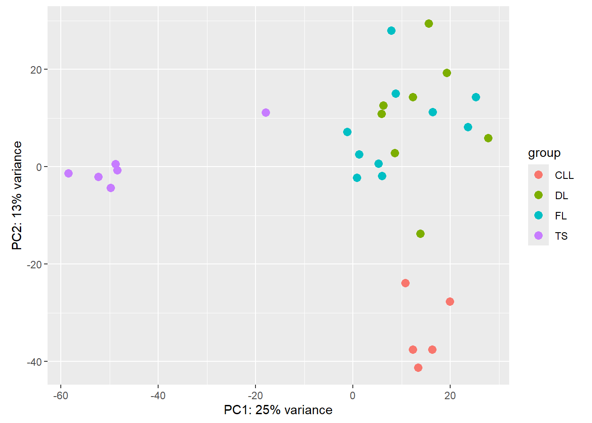
PC1 seperate case-control, PC2 separate CLL from DLBCL & FL.
Sample quality control by heatmaps
library(pheatmap)
select <- order(rowMeans(counts(dds, normalized = TRUE)),
decreasing = TRUE)[1:20]
df <- as.data.frame(colData(dds))
pheatmap(assay(rld)[select, ], annotation_col = df,
cluster_rows = FALSE, show_rownames = FALSE)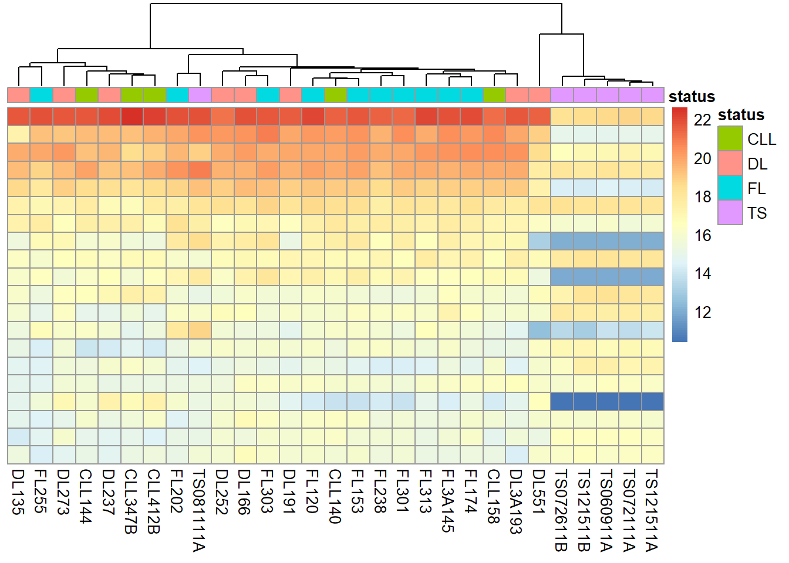
sampleDists <- dist(t(assay(rld)))
sampleDistMatrix <- as.matrix(sampleDists)
pheatmap(sampleDistMatrix,
clustering_distance_rows = sampleDists,
clustering_distance_cols = sampleDists,
show_rownames = FALSE)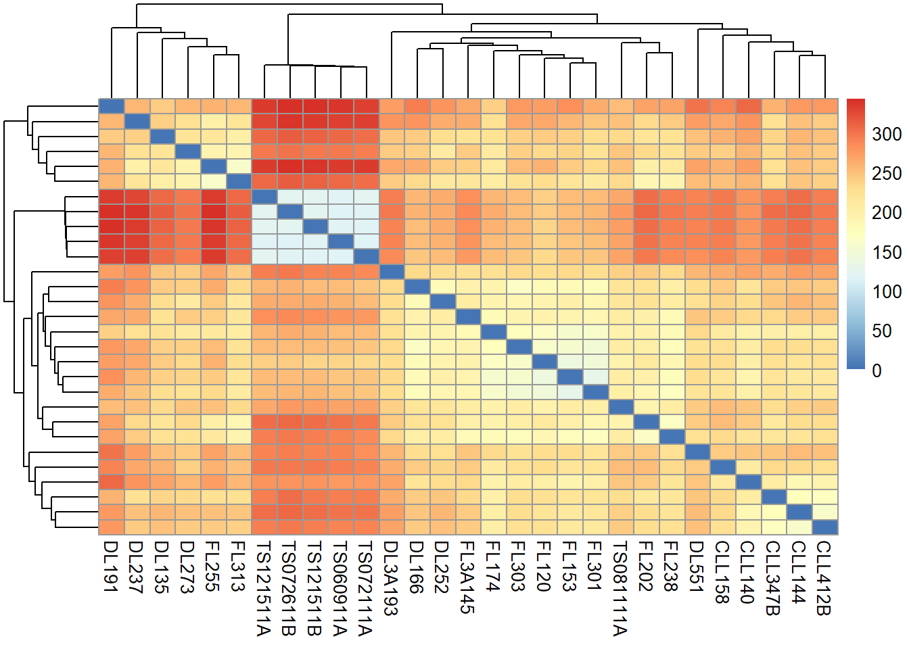
Clearly there are low quality samples, I intend to minimize batch effects by SVA.
Batch correction by Surrogate Variable Analysis
Identify unknown batch effects by svaseq.
dat <- counts(dds, normalized = TRUE)
dat <- dat[rowMeans(dat) > 1, ] # prefilter low-count genes
dds$status <- relevel(dds$status, "TS") # set baseline to healthy
library(sva)
mod <- model.matrix(~ status, colData(dds))
mod0 <- model.matrix(~ 1, colData(dds))
svseq <- svaseq(dat, mod, mod0, n.sv = 2)Number of significant surrogate variables is: 2
Iteration (out of 5 ):1 2 3 4 5 Visualize surrogate variables.
svseq_sv <- tibble(SV1 = svseq$sv[,1],
SV2 = svseq$sv[,2])
library(ggrepel)
svseq_sv |>
mutate(sample = colnames(dds),
status = dds$status) |>
ggplot(aes(x = SV1, y = SV2, color = status)) +
geom_point() +
geom_text_repel(aes(label = sample)) 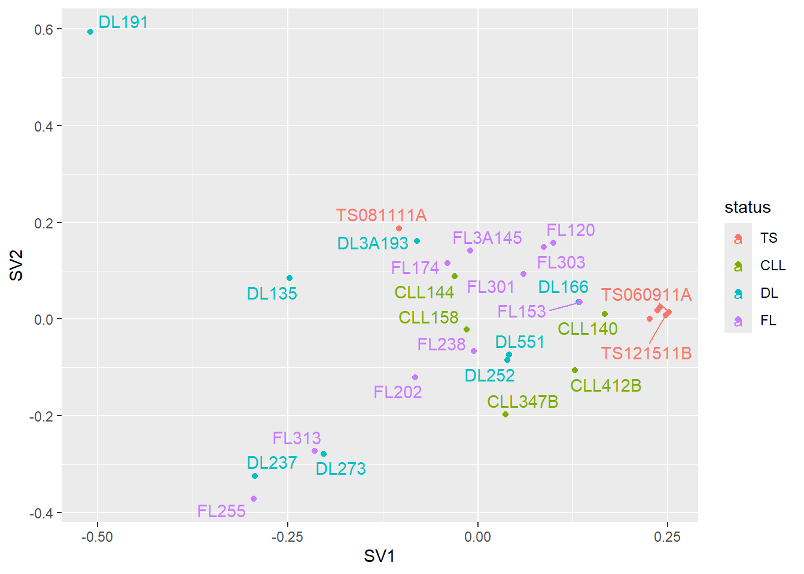
par(mfrow = c(2, 1), mar = c(3,5,3,1))
for (i in 1:2) {
stripchart(svseq$sv[, i] ~ dds$status,
vertical = TRUE,
main = paste0("SV", i))
abline(h = 0)
}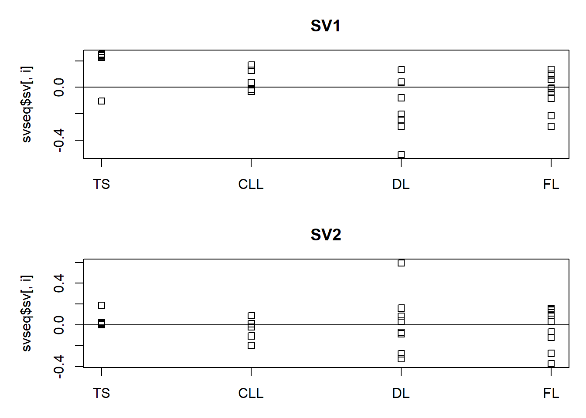
There are 2 outliers: TS081111A and DL191.
Run DESeq
Add SV1 and SV2 to design.
dds$SV1 <- svseq$sv[,1]
dds$SV2 <- svseq$sv[,2]
design(dds) <- ~ SV1 + SV2 + statusPrefilter low count genes (optional).
dds <- dds[rowSums(counts(dds) >= 10) >= 5] Run DESeq.
dds <- DESeq(dds)I can save for convenience.
write_rds(dds, "dds.rds")
# dds <- read_rds("dds.rds") # laterExtract DEGs and Visualize
CLL vs healthy
DEGs defined as log2FC > 1 and padj < 0.01
res_CLL <- results(
dds,
contrast = c("status", "CLL", "TS"),
lfcThreshold = 1,
alpha = 0.01
)Get gene symbols
library(org.Hs.eg.db)
ens.str_CLL <- substr(rownames(res_CLL), 1, 15)
res_CLL$symbol <- mapIds(org.Hs.eg.db, ens.str_CLL, "SYMBOL", "ENSEMBL")Gene symbols of DEGs
CLL_DEG <- res_CLL[res_CLL$padj < 0.01 & !is.na(res_CLL$padj), ]$symbol
CLL_DEG <- CLL_DEG[!is.na(CLL_DEG)] # some genes couldn't be annotatedGene symbols of upregulated DEGs
CLL_DEG_up <- res_CLL[res_CLL$padj < 0.01 &
!is.na(res_CLL$padj) &
res_CLL$log2FoldChange > 1, ]$symbol
CLL_DEG_up <- CLL_DEG_up[!is.na(CLL_DEG_up)]DLBCL vs healthy
Repeat
res_DL <- results(
dds,
contrast = c("status", "DL", "TS"),
lfcThreshold = 1,
alpha = 0.01
)
ens.str_DL <- substr(rownames(res_DL), 1, 15)
res_DL$symbol <- mapIds(org.Hs.eg.db, ens.str_DL, "SYMBOL", "ENSEMBL")
DL_DEG <- res_DL[res_DL$padj < 0.01 & !is.na(res_DL$padj), ]$symbol
DL_DEG <- DL_DEG[!is.na(DL_DEG)]
DL_DEG_up <- res_DL[res_DL$padj < 0.01 &
!is.na(res_DL$padj) &
res_DL$log2FoldChange > 1, ]$symbol
DL_DEG_up <- DL_DEG_up[!is.na(DL_DEG_up)]FL vs healthy
Repeat
res_FL <- results(
dds,
contrast = c("status", "FL", "TS"),
lfcThreshold = 1,
alpha = 0.01
)
ens.str_FL <- substr(rownames(res_FL), 1, 15)
res_FL$symbol <- mapIds(org.Hs.eg.db, ens.str_FL, "SYMBOL", "ENSEMBL")
FL_DEG <- res_FL[res_FL$padj < 0.01 & !is.na(res_FL$padj), ]$symbol
FL_DEG <- FL_DEG[!is.na(FL_DEG)]
FL_DEG_up <- res_FL[res_FL$padj < 0.01 &
!is.na(res_FL$padj) &
res_FL$log2FoldChange > 1, ]$symbol
FL_DEG_up <- FL_DEG_up[!is.na(FL_DEG_up)]Visualize by Volcano plot and MA plot (CLL as an example)
Shrink logFC for better visualization.
reslfc_CLL <- lfcShrink(
dds,
contrast = c("status", "CLL", "TS"),
res = res_CLL,
type = "ashr"
)Volcano plot
library(EnhancedVolcano)
EnhancedVolcano(
reslfc_CLL,
lab = res_CLL$symbol,
x = "log2FoldChange",
y = "padj"
)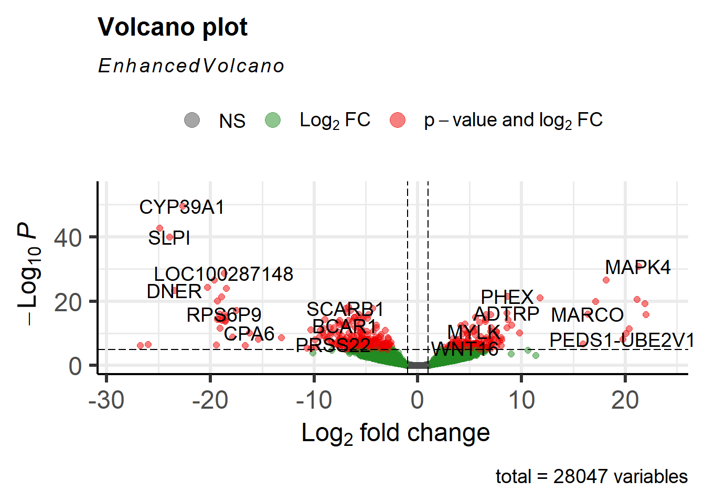
MA plot
plotMA(reslfc_CLL)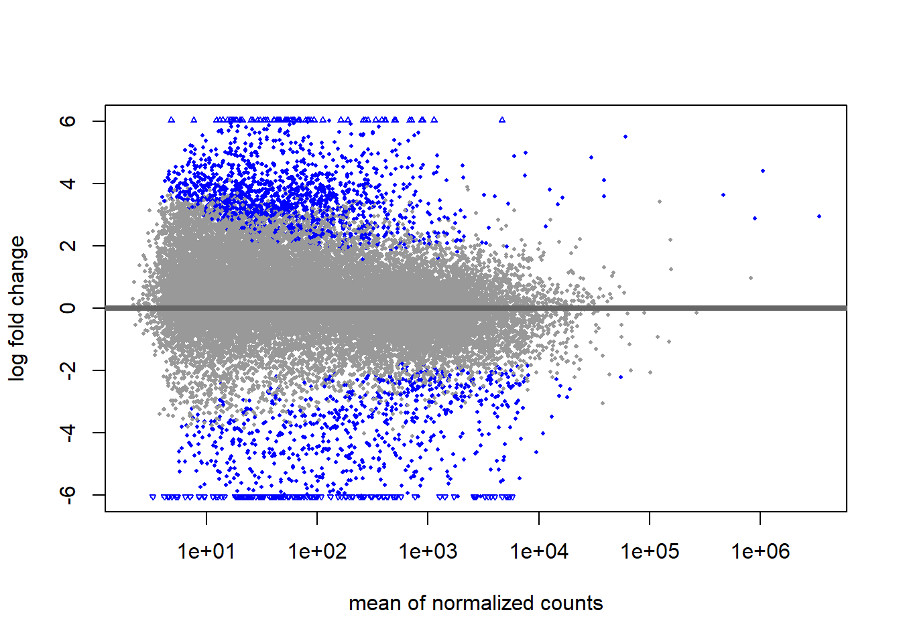
Visualize by heat map (CLL as an example)
rld <- rlog(dds, blind = FALSE)
res_CLL = res_CLL[order(res_CLL$padj),]
topgenes = head(rownames(res_CLL), 500)
mat = assay(rld)[topgenes, which(colData(rld)$status %in% c("CLL", "TS"))]
mat = mat - rowMeans(mat)
df = as.data.frame(colData(rld)[which(colData(rld)$status %in% c("CLL", "TS")),1])
rownames(df) <- colnames(mat)
colnames(df) <- "status"
pheatmap(mat,
annotation_col = df,
cluster_rows = FALSE,
show_rownames = FALSE)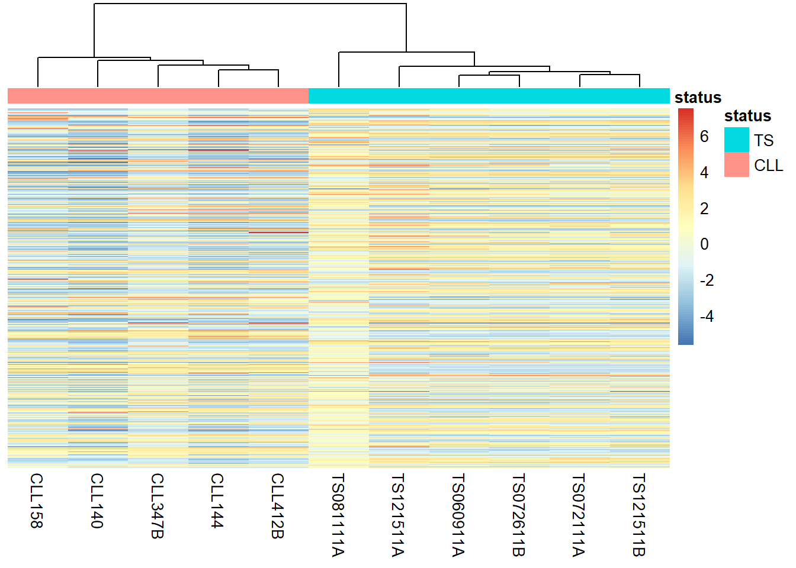
Visualize common DEGs in 3 B cell malignancies by Venn diagram
Common DEGs and upregulated DEGs
library(ggvenn)
ggvenn(
list("CLL" = CLL_DEG, "DLBCL" = DL_DEG, "FL" = FL_DEG),
show_percentage = FALSE
)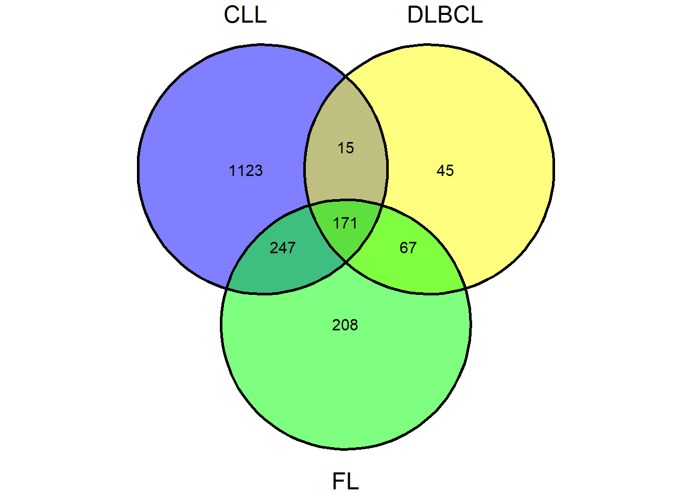
ggvenn(
list("CLL" = CLL_DEG_up, "DLBCL" = DL_DEG_up, "FL" = FL_DEG_up),
show_percentage = FALSE
)Identify and export protein-coding common DEGs
common_DEG <- intersect(intersect(CLL_DEG, DL_DEG), FL_DEG)
common_DEG <- common_DEG[which(
select(org.Hs.eg.db, common_DEG, "GENETYPE", "SYMBOL")[,2] == "protein-coding")]
common_DEG_up <- intersect(intersect(CLL_DEG_up, DL_DEG_up), FL_DEG_up)
common_DEG_up <- common_DEG_up[which(
select(org.Hs.eg.db, common_DEG_up, "GENETYPE", "SYMBOL")[,2] == "protein-coding")]
write_csv(data.frame(
gene = common_DEG,
change = if_else(common_DEG %in% common_DEG_up, "up", "down")),
"common_DEG.csv")STRING network analysis using cytoscape software
I import common DEGs into Cytoscape StringApp.

I identified VCAM-1 as one of the center proteins and will use it as a drug target to practice cheminformatics.
Limitation: I am extrapolating proteomes from transcriptomes, which is not always appropriate.
Visualize VCAM1 expression across samples.
plotCounts(dds, gene = "ENSG00000162692.12_4", intgroup = "status")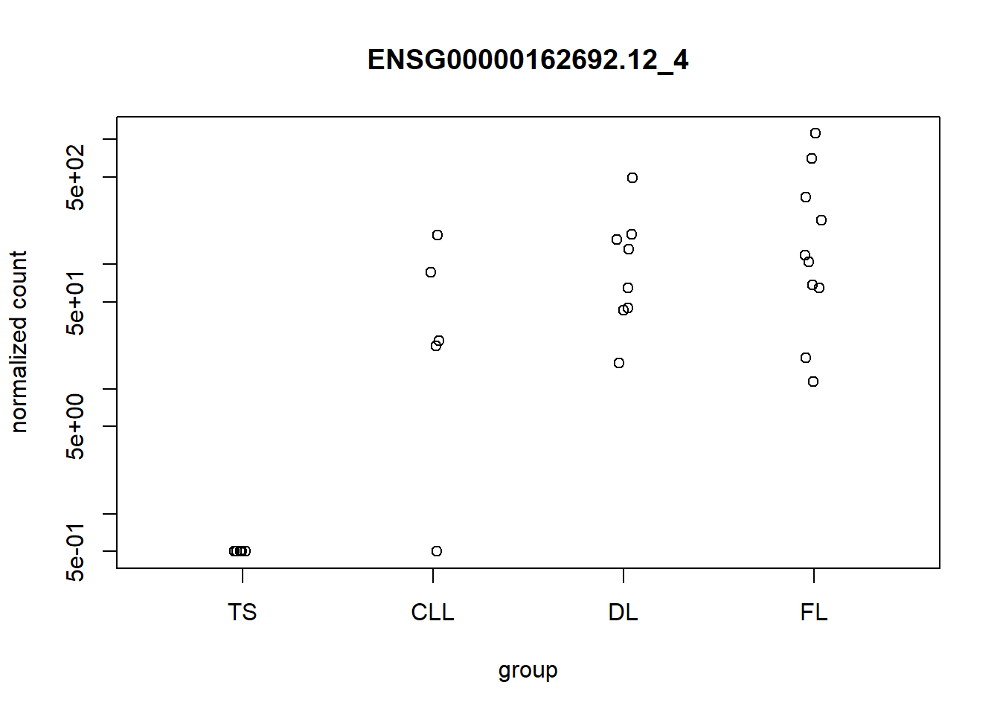
Enrichment analysis (ORA & GSEA)
I follow the guide of:
vignette("clusterProfiler")Gene sets are downloaded from MSigDb.
Over-representation analysis (CLL & Hallmark as an example)
I perform ORA separately for up- and down-regulated genes
Import Hallmark gene sets
library(clusterProfiler)
hallmark_gmt <- read.gmt("./h.all.v2024.1.Hs.symbols.gmt")Up-regulated DEGs:
em_hall_up <- enricher(gene = CLL_DEG_up,
TERM2GENE = hallmark_gmt)
barplot(em_hall_up)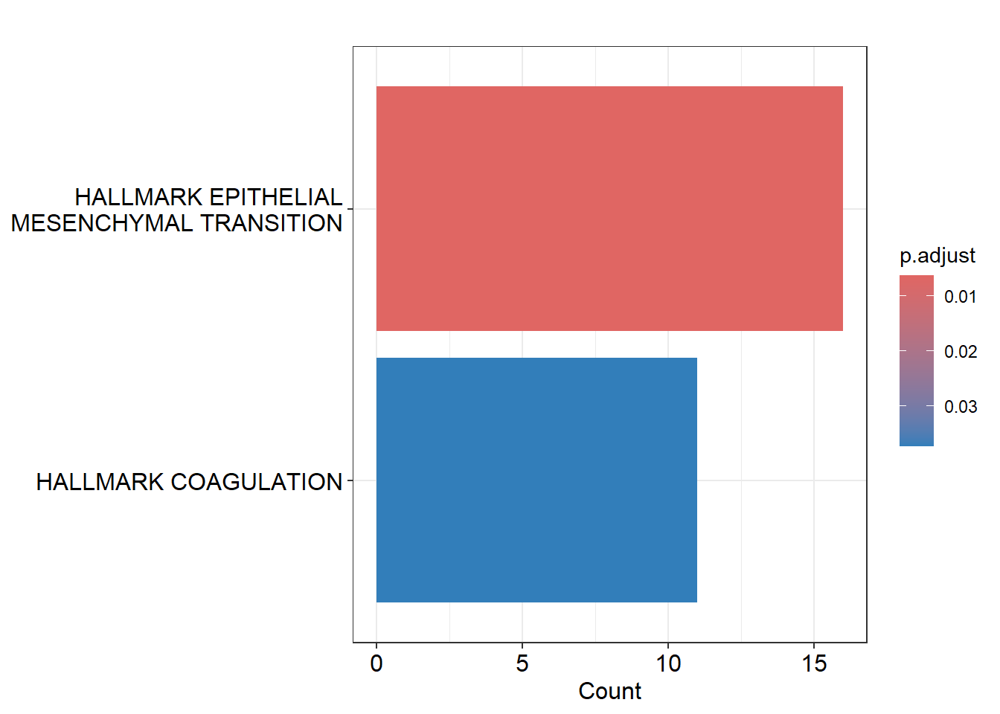
dotplot(em_hall_up)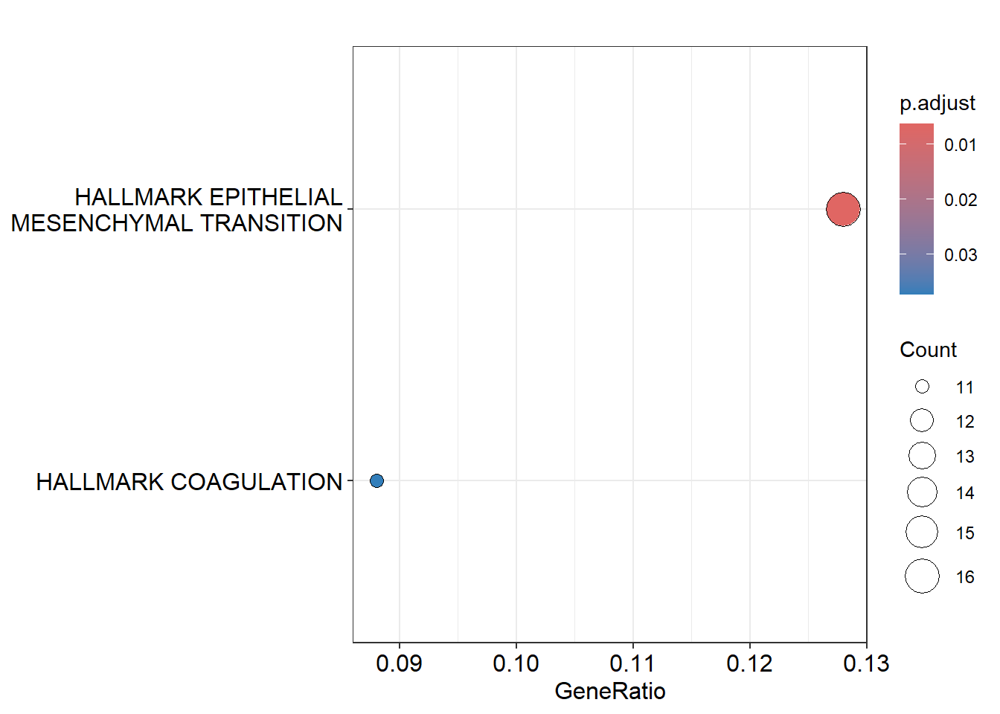
cnetplot(em_hall_up)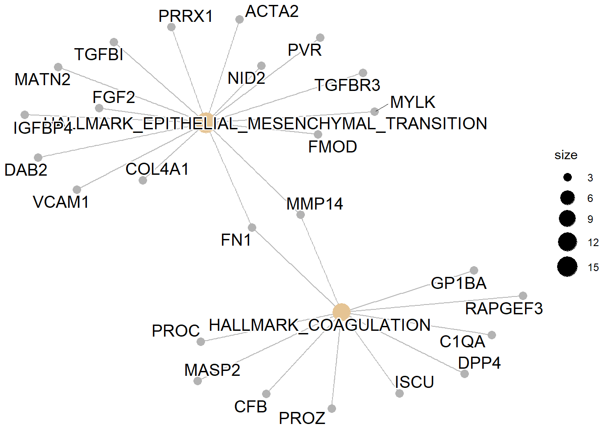
VCAM1 being 1 of the genes belonging to EMT hallmark.
Down-regulated DEGs:
em_hall_down <- enricher(gene = CLL_DEG[!(CLL_DEG %in% CLL_DEG_up)],
TERM2GENE = hallmark_gmt)
barplot(em_hall_down)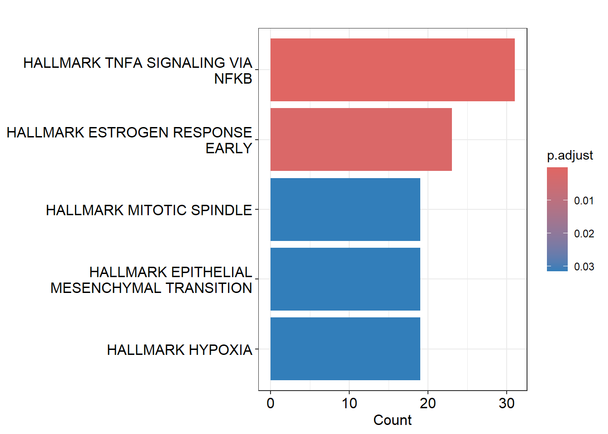
dotplot(em_hall_down)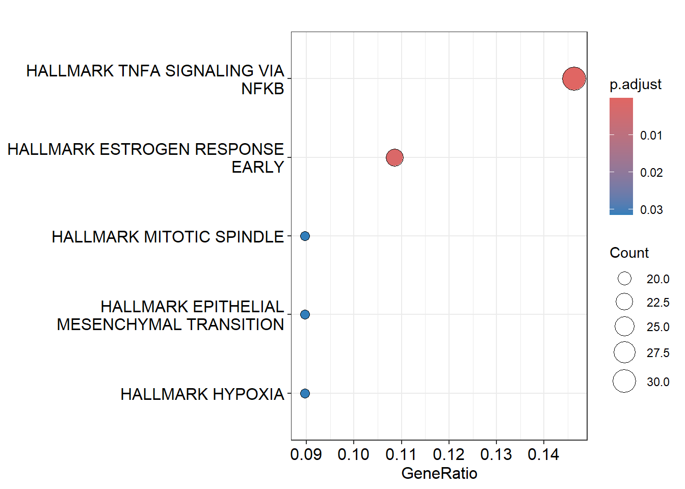
Gene set enrichment analysis (CLL & GO as an example)
Import GO terms gene sets
go_gmt <- read.gmt("./c5.go.v2024.1.Hs.symbols.gmt")Create and rank CLL gene list by Wald test statistics
geneList_CLL <- res_CLL$stat
names(geneList_CLL) <- res_CLL$symbol
geneList_CLL <- geneList_CLL[order(geneList_CLL, decreasing = TRUE)]
geneList_CLL <- geneList_CLL[!is.na(names(geneList_CLL))]GSEA
em2 <- GSEA(geneList_CLL, TERM2GENE = go_gmt)
head(em2) ID
GOCC_IMMUNOGLOBULIN_COMPLEX GOCC_IMMUNOGLOBULIN_COMPLEX
GOMF_ANTIGEN_BINDING GOMF_ANTIGEN_BINDING
GOBP_IMMUNOGLOBULIN_PRODUCTION GOBP_IMMUNOGLOBULIN_PRODUCTION
GOBP_CHROMOSOME_SEGREGATION GOBP_CHROMOSOME_SEGREGATION
GOBP_NEGATIVE_REGULATION_OF_CHROMOSOME_ORGANIZATION GOBP_NEGATIVE_REGULATION_OF_CHROMOSOME_ORGANIZATION
GOBP_SISTER_CHROMATID_SEGREGATION GOBP_SISTER_CHROMATID_SEGREGATION
Description
GOCC_IMMUNOGLOBULIN_COMPLEX GOCC_IMMUNOGLOBULIN_COMPLEX
GOMF_ANTIGEN_BINDING GOMF_ANTIGEN_BINDING
GOBP_IMMUNOGLOBULIN_PRODUCTION GOBP_IMMUNOGLOBULIN_PRODUCTION
GOBP_CHROMOSOME_SEGREGATION GOBP_CHROMOSOME_SEGREGATION
GOBP_NEGATIVE_REGULATION_OF_CHROMOSOME_ORGANIZATION GOBP_NEGATIVE_REGULATION_OF_CHROMOSOME_ORGANIZATION
GOBP_SISTER_CHROMATID_SEGREGATION GOBP_SISTER_CHROMATID_SEGREGATION
setSize enrichmentScore
GOCC_IMMUNOGLOBULIN_COMPLEX 123 -0.6906808
GOMF_ANTIGEN_BINDING 144 -0.5979868
GOBP_IMMUNOGLOBULIN_PRODUCTION 170 -0.5639237
GOBP_CHROMOSOME_SEGREGATION 404 -0.4798570
GOBP_NEGATIVE_REGULATION_OF_CHROMOSOME_ORGANIZATION 94 -0.5750914
GOBP_SISTER_CHROMATID_SEGREGATION 229 -0.4999796
NES pvalue
GOCC_IMMUNOGLOBULIN_COMPLEX -3.250030 1e-10
GOMF_ANTIGEN_BINDING -2.880094 1e-10
GOBP_IMMUNOGLOBULIN_PRODUCTION -2.765236 1e-10
GOBP_CHROMOSOME_SEGREGATION -2.590304 1e-10
GOBP_NEGATIVE_REGULATION_OF_CHROMOSOME_ORGANIZATION -2.575045 1e-10
GOBP_SISTER_CHROMATID_SEGREGATION -2.558896 1e-10
p.adjust qvalue
GOCC_IMMUNOGLOBULIN_COMPLEX 9.656716e-09 7.134328e-09
GOMF_ANTIGEN_BINDING 9.656716e-09 7.134328e-09
GOBP_IMMUNOGLOBULIN_PRODUCTION 9.656716e-09 7.134328e-09
GOBP_CHROMOSOME_SEGREGATION 9.656716e-09 7.134328e-09
GOBP_NEGATIVE_REGULATION_OF_CHROMOSOME_ORGANIZATION 9.656716e-09 7.134328e-09
GOBP_SISTER_CHROMATID_SEGREGATION 9.656716e-09 7.134328e-09
rank
GOCC_IMMUNOGLOBULIN_COMPLEX 2852
GOMF_ANTIGEN_BINDING 1831
GOBP_IMMUNOGLOBULIN_PRODUCTION 3520
GOBP_CHROMOSOME_SEGREGATION 4878
GOBP_NEGATIVE_REGULATION_OF_CHROMOSOME_ORGANIZATION 4835
GOBP_SISTER_CHROMATID_SEGREGATION 5019
leading_edge
GOCC_IMMUNOGLOBULIN_COMPLEX tags=63%, list=14%, signal=55%
GOMF_ANTIGEN_BINDING tags=37%, list=9%, signal=33%
GOBP_IMMUNOGLOBULIN_PRODUCTION tags=49%, list=18%, signal=41%
GOBP_CHROMOSOME_SEGREGATION tags=49%, list=25%, signal=37%
GOBP_NEGATIVE_REGULATION_OF_CHROMOSOME_ORGANIZATION tags=56%, list=24%, signal=43%
GOBP_SISTER_CHROMATID_SEGREGATION tags=52%, list=25%, signal=39%
core_enrichment
GOCC_IMMUNOGLOBULIN_COMPLEX IGKV3D-7/IGKV2D-26/IGKV2-40/IGKV1D-39/IGLV4-69/IGHV3-15/IGKV2-28/IGKV2D-24/CD79A/IGKV2D-28/IGHV3-7/IGKV4-1/IGHG1/IGKV3D-11/IGHV3-48/IGKV1D-13/IGLV2-8/IGLV6-57/IGKV1-6/IGHV3-13/IGKV1D-43/IGHV1-3/IGKV6D-21/IGHV3-49/IGLV1-51/IGLV3-16/IGKV1-39/IGHV4-28/IGHV1-24/IGLV5-45/IGKV2D-29/IGLV5-37/IGLV3-9/IGLV9-49/IGLV2-18/IGLV10-54/IGLV1-36/IGKV1-27/IGKV1-17/IGLL1/IGKV3D-20/IGLV1-40/IGHV4-59/IGLV2-14/IGHV3-21/IGHV4-34/IGKV1-5/IGLV3-10/IGLV3-21/IGHV3-20/IGLV3-19/IGLV8-61/IGKV1-12/IGKV6-21/IGKV1-16/IGKV2-24/IGHV4-61/IGHV6-1/IGHV2-26/IGHV1-18/IGHV3-72/IGKV1-9/IGHV3-74/IGHV1-58/IGKV3-20/IGLV1-44/IGHV3-64/IGHV3-11/IGHV3-43/IGHV5-51/IGHV3-73/IGHV2-5/IGHV2-70D/IGLV2-11/IGLV3-25/IGHV4-39/IGLV2-23/IGHV2-70
GOMF_ANTIGEN_BINDING CD40/IGKV2D-28/IGHV3-7/IGKV4-1/IGHG1/TGFB1/IGHV3-48/IGLV2-8/IGLV6-57/IGHV3-13/IGHV1-3/IGHV3-49/IGLV1-51/PPP2R1A/IGKV1-39/IGHV4-28/IGHV1-24/IGKV1-17/IGLL1/SLC7A5/IGLV1-40/IGHV4-59/SLAMF1/IGLV2-14/IGHV3-21/IGHV4-34/IGKV1-5/CD1A/IGLV3-21/IGHV3-20/IGLV3-19/IGKV1-16/IGHV4-61/IGHV6-1/IGHV2-26/IGHV1-18/IGHV3-72/IGHV3-74/IGHV1-58/IGKV3-20/IGLV1-44/IGHV3-64/IGHV3-11/IGHV3-43/IGHV5-51/IGHV3-73/IGHV2-5/IGHV2-70D/IGLV2-11/IGLV3-25/IGHV4-39/IGLV2-23/IGHV2-70
GOBP_IMMUNOGLOBULIN_PRODUCTION CTNNBL1/C17orf99/IGKV1-8/TLR9/IGKV2-30/IGKV1-37/SUPT6H/IGKV2-29/ZPBP2/RNF8/PHB2/IGKV3D-7/IGKV2D-26/HSPD1/IGKV2-40/IGKV1D-39/IGLV4-69/VPREB3/TCF3/IGKV2-28/IGKV2D-24/MCM3AP/KMT5C/POLQ/GPI/TRAV2/CD40/SASH3/IGKV2D-28/IGKV4-1/PMS2/AICDA/YY1/IGKV3D-11/TGFB1/PKN1/SWAP70/IGKV1D-13/IGLV2-8/IGLV6-57/IGKV1-6/IGKV1D-43/IGKV6D-21/IGLV1-51/IGLV3-16/IGKV1-39/IGLV5-45/SHLD1/IGKV2D-29/IGLV5-37/IGLV3-9/IGLV9-49/IGLV2-18/IGLV10-54/IGLV1-36/IGKV1-27/IGKV1-17/IGKV3D-20/TNF/IGLV1-40/IGLV2-14/IGKV1-5/IGLV3-10/IGLV3-21/IGLV3-19/IGLV8-61/IGKV1-12/IGKV6-21/IGKV1-16/NSD2/IGKV2-24/BCL6/CLCF1/IGKV1-9/SLC15A4/IGKV3-20/IGLV1-44/IL6/IGLV2-11/HMCES/IGLV3-25/CR1/IGLV2-23/CD22
GOBP_CHROMOSOME_SEGREGATION ASPM/CHMP1A/RB1/SPC24/MAD2L2/GEM/TUBG2/HAUS4/ZWINT/RIOK3/CENPK/CENPH/PMF1/BCL7C/WAPL/CHMP2B/RACGAP1/TTK/PHF13/ESCO2/CENPU/SRPK1/TEX14/CHFR/TRAPPC12/MAD2L1/KIF23/KMT5A/EHMT2/BUB1B/DLGAP5/SMARCB1/CIAO2A/CCDC61/SKA1/CDC27/MAPK15/CENPF/TUBGCP3/SMARCD2/CENPN/CENPP/REC8/SIRT2/STAG3/SMC4/CHEK2/CENPO/CENPE/RMDN1/HAUS2/CENPX/NDC80/SETDB2/MND1/DPF2/HAUS7/CENPL/FMN2/ARL8B/KAT5/MAPRE1/ANAPC11/TUBGCP4/ACTR3/KIF14/DIAPH3/MAP1S/SAC3D1/CHMP2A/TOP3A/CENPW/SPC25/CEP55/CENPI/CDK1/MIS18A/TUBG1/CDCA2/NUDC/FIRRM/KNSTRN/PHF10/CHAMP1/PUM2/OIP5/NDE1/CCNB1/NEK2/ARID1A/RCC1/KIF11/PSMC3IP/SLC25A5/CENPJ/SGO2/BAG6/TUBGCP2/NCAPG/TOP2A/STIL/SIRT7/KIF2C/SMARCD1/NUSAP1/MAU2/UHRF1/MKI67/UBE2C/KIF3B/ECT2/PSRC1/TUBB/DDB1/ERCC2/NCAPH2/HECW2/RECQL5/NEK6/SPAG5/UBE2I/BUB1/AURKB/HSPA1A/NUP62/PTTG1/FBXO5/XRCC3/TPX2/CCNB2/CSNK2A2/CHMP6/KIF4A/NCAPD2/HJURP/CDCA5/FAM83D/RAD21/NUF2/ESPL1/NTMT1/KNL1/NCAPH/BCL7B/LSM14A/CEP85/ZWILCH/KATNB1/CIAO2B/RRS1/MZT1/GPSM2/RHOA/HAUS3/CDC20/KIFC1/CENPM/ANAPC15/AURKA/SPDL1/EML3/PPP2R1A/DIS3L2/HASPIN/SEPTIN1/CHMP4B/TOP1/ACTR2/CUL3/TENT4A/ANAPC2/TRIP13/BIRC5/NDC1/ACTB/CDT1/HSPA1B/SGO1/RMI2/HAUS8/INCENP/KIF22/CDCA8/GEN1/RCC2/PLK1/TACC3/UBE2B/BCL7A/CTCF/MSH5/DUSP1/MYBL2/CSNK1D/KIF18B/SMARCA4
GOBP_NEGATIVE_REGULATION_OF_CHROMOSOME_ORGANIZATION SPC24/MAD2L2/ZWINT/WAPL/TTK/TENT4B/TEX14/MAD2L1/BUB1B/H3-3B/CENPF/HNRNPC/NAA10/NDC80/SMG6/TERF2IP/SRC/SPC25/XRCC1/TP53/CCNB1/ACD/HNRNPA1/TOP2A/RTEL1/TNKS2/TEN1/BUB1/AURKB/FBXO5/XRCC3/RAD21/NUF2/ESPL1/KNL1/PARP1/ZWILCH/CDC20/ANAPC15/SPDL1/H3-3A/HASPIN/TRIP13/BIRC5/SLX1B/INCENP/PIF1/CDCA8/GEN1/PLK1/DUSP1/SLX4/TERF2
GOBP_SISTER_CHROMATID_SEGREGATION KIF18A/SKA2/SMC2/CHMP1A/RB1/SPC24/MAD2L2/TUBG2/ZWINT/CENPK/BCL7C/WAPL/CHMP2B/RACGAP1/TTK/PHF13/TEX14/CHFR/MAD2L1/KIF23/KMT5A/BUB1B/DLGAP5/SMARCB1/CCDC61/SKA1/CDC27/MAPK15/CENPF/SMARCD2/SMC4/CHEK2/CENPE/RMDN1/NDC80/DPF2/KAT5/MAPRE1/ANAPC11/KIF14/CHMP2A/SPC25/CEP55/CENPI/CDK1/TUBG1/NUDC/KNSTRN/PHF10/CHAMP1/CCNB1/NEK2/ARID1A/KIF11/NCAPG/TOP2A/KIF2C/SMARCD1/NUSAP1/UHRF1/UBE2C/KIF3B/PSRC1/NCAPH2/HECW2/NEK6/SPAG5/BUB1/AURKB/HSPA1A/NUP62/FBXO5/XRCC3/TPX2/CHMP6/KIF4A/NCAPD2/CDCA5/RAD21/NUF2/ESPL1/KNL1/NCAPH/BCL7B/LSM14A/ZWILCH/KATNB1/RRS1/MZT1/RHOA/CDC20/KIFC1/ANAPC15/SPDL1/EML3/PPP2R1A/DIS3L2/HASPIN/CHMP4B/CUL3/TENT4A/ANAPC2/TRIP13/BIRC5/ACTB/CDT1/HSPA1B/RMI2/INCENP/KIF22/CDCA8/GEN1/PLK1/TACC3/BCL7A/DUSP1/MYBL2/KIF18B/SMARCA4dotplot(em2)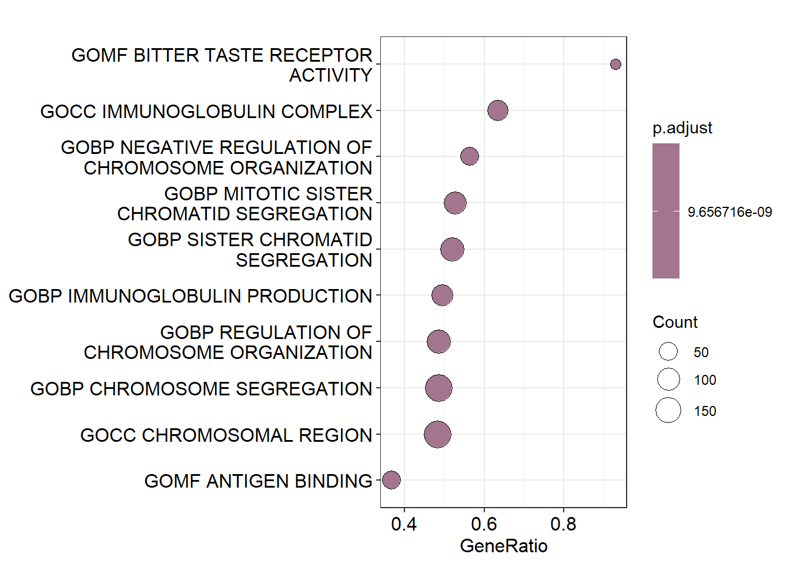
gseaplot(em2,
geneSetID = 1,
title = em2$Description[1])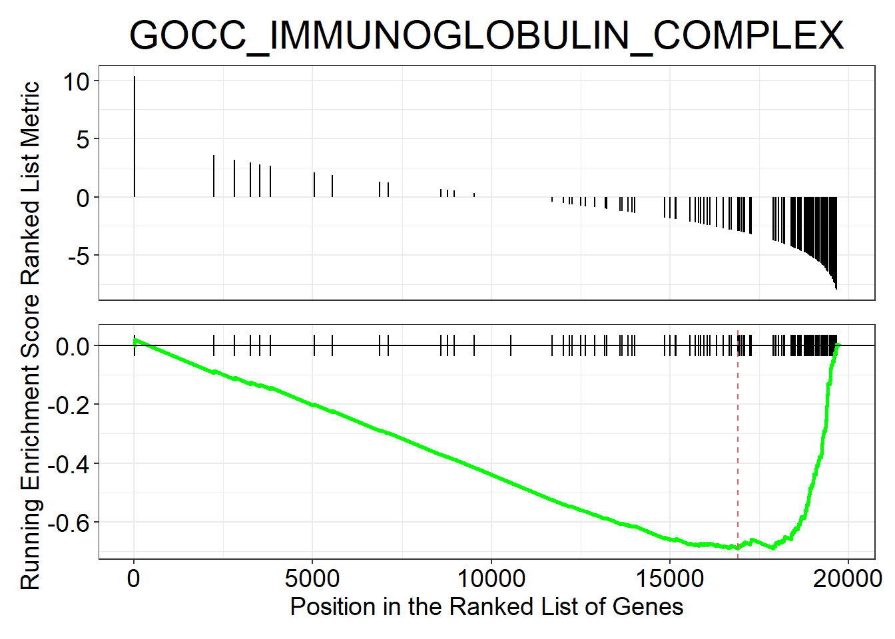
This might show B cell dysfunction.
Molecular Docking on VCAM-1
ChEMBL target query
Query target report card of VCAM-1 on ChEMBL database
Look into Ligand efficiencies section
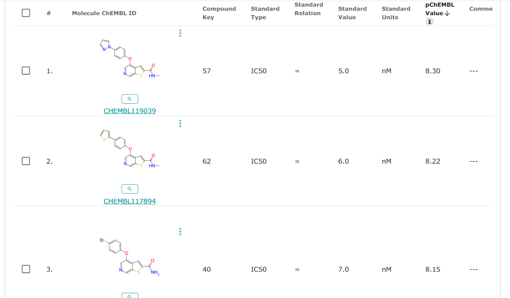
I select the most potent small molecule as an example for learning.
Search CHEMBL119039 on PubChem and download 3D Conformer as sdf file (CID: 10970154).
Search VCAM-1 on Protein Data Bank and download pdb file (ID: 1VSC).
I follow the Autodock 4 guide of: https://www.youtube.com/watch?v=ZVKKsK5DsCY&t=4115s.
Sound out to BioinformaticsCopilot channel.
Below I briefly describe the workflow.
Needed software packages: Autodock 4, MGL tools, ChimeraX, Avogadro, Discovery Studio.
I created a desktop file as the working directory as this makes the whole process easier.
Input preparation
Protein clean-up
Open protein file on ChimeraX, delete non-standard residues and chains if present.
Save as a new pdb file.
Ligand clean-up
Open ligand sdf file on Avogadro. Add hydrogens. Optimize geometry until no atoms move.
Save as mol2 file.
Protein and ligand preparation using MGL tools
Open protein pdb file on AutoDockTools. (Edit/) Delete water. Add all hydrogens. Merge non-polar hydrogens. Add Kollman charges. Assign AD4 type (optimize force field).
Grid/Macromolecule/Choose. This save protein as pdbqt file.
Open ligand mol2 file on AutoDockTools. Ligand/ Detect root. Choose torsion/Make active bonds non-rotatable then make all non-rotatable bonds rotatable. This identifies the rotatable bonds. Output/save as pdbqt file.
Run Autogrid4
Grid/Choose protein (preserve charges). Set map type directly. Open grid box.
For blind docking, cover the whole protein with the grid box.
Output/save grid as gpf file.
Run/Autogrid. Output is glp file.
Run Autodock4
Open pdbqt files of both protein and ligand.
Docking/Macromolecule/Set Rigid Filename. Choose ligand.
Search parameters:
For blind docking: Genetic Algorithm - long, 100 runs
For targeted docking: Simulated Annealing, Local Search Parameter
For practice, I set 50 runs (which took almost 10 hours for my laptop)
Output/save Lamarchian GA as dpf file.
Run/Autodock. Output as dlg file.
Analysis
Analyze/Dockings/Open dlg file.
Macromolcule/Open
Conformation/Play. This allows visualization of all 50 docking results.
Open panel/
Show info: all info from dlg file
Build all: make all conformations as pdbqt files (unfortunately it counts from 0, not 1)
Write complex: save the selected complex as pdbqt file
Clustering/Show (clustering histogram)
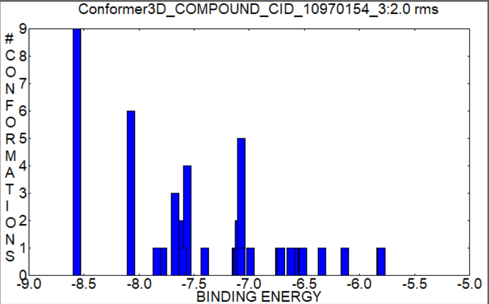
The best conformation cluster is 27:
The ligand interacts with both chains of VCAM-1
Estimated Free Energy of Binding = -8.56 kcal/mol
Estimated Inhibition Constant, Ki = 531.85 nM (not as close as the experimental value)
Visualization
AutoDockTools: visualize ligand and interacting aminoacids, Analyze/Dockings/Show Interactions
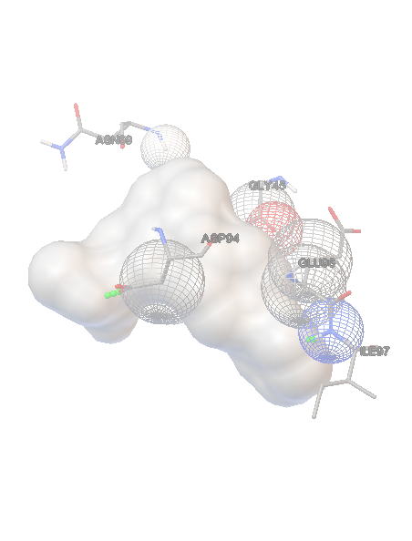
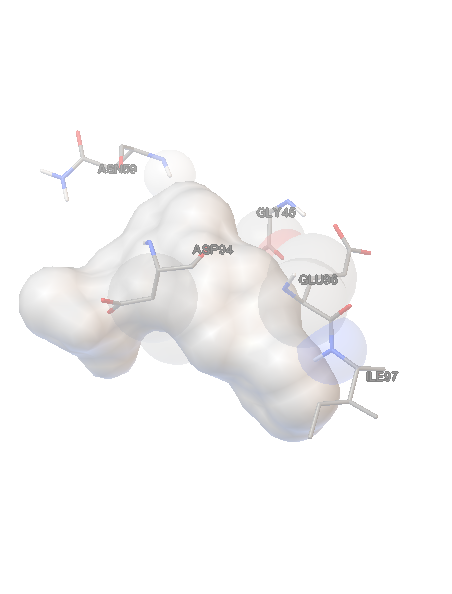
ChimeraX: visualize 3D complex, input: bestcomplex.pdbqt
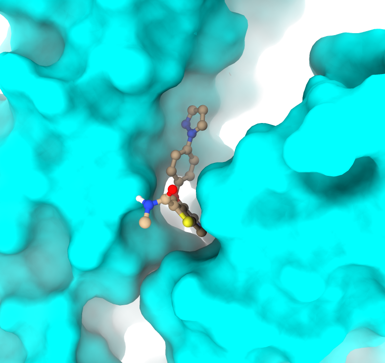
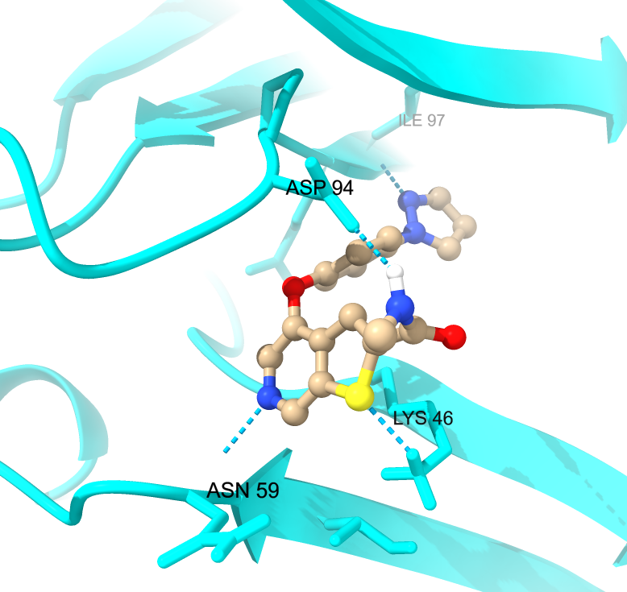
Discovery Studio: turn 3D to 2D, input: dock_conf26.pdb (converted from pdbqt in Autodocktools)
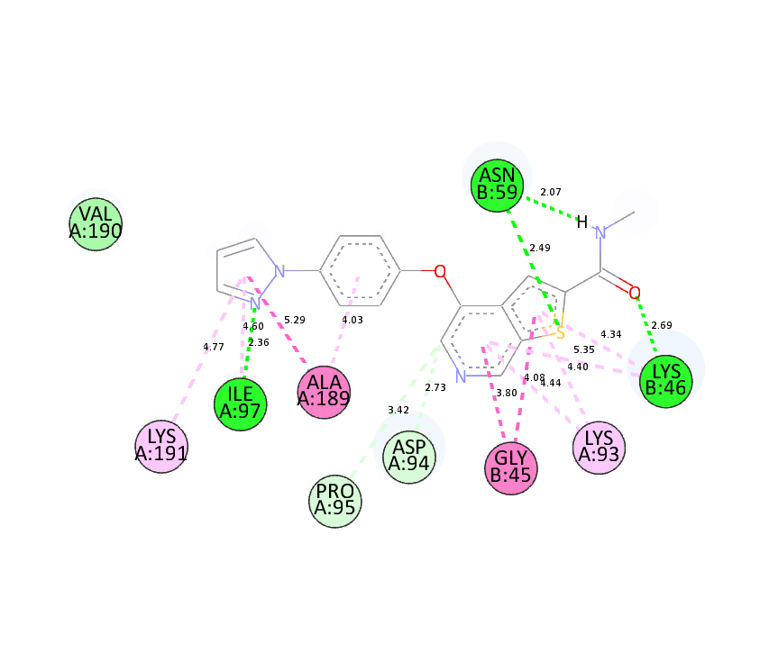
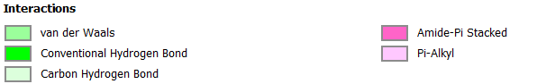